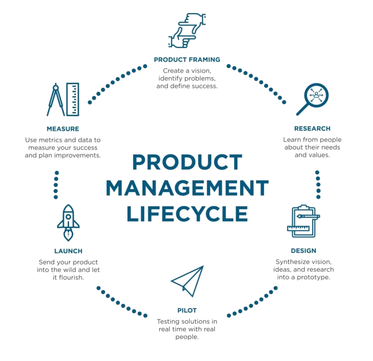

Product Manager · Mobility & Connected Vehicles
I work on connected vehicles and mobility products. What I bring to the table is that I can actually read the CAN bus data, understand why firmware behaves a certain way, and use that context to make better product calls — rather than just coordinating between people who do.

Core Expertise
Before I write a spec or plan a sprint, I ask: are we solving the actual problem? These are the things I do for making sure the product is successful.
I talk to operators and riders regularly to understand the market not just at the start but throughout the product lifecycle. The best decisions I've made are derived from a conversation backed by data.
I try to agree on what success looks like before anything gets built. It saves arguments later and keeps everyone honest — including me. I'm comfortable writing SQL and building dashboards to get to the answer myself.
Getting both internal and external stakeholders (customer, ops, engineering and leadership) on the same page is the important. I spend time to talk to every stakeholder and make sure everyone is on the same page resulting in successful outcome.
I stay involved from the product inceptions to defining the problem and designing the solution. As we build the product I take ownership of every aspect to make sure the product I own is the product that is needed.
Selected Work
Each of these started with a real problem someone was running into. The technology came second.
Joyride · Connected Mobility
Before this, operators had manual way of renting vehicles which was both time and resource intensive. We connected GEM Cars and Yamaha vehicles to the cloud instaling after market devices tailored to the fleet need so the operator could actually deploy vehicle without having anyone on site while monitoring and checking all necessary points they requrie for operations.
Joyride · Platform Engineering
Different vehicle partners sent data in completely different formats — some through REST APIs, some over raw TCP connections. We built one platform that can communicate to all different type of protocols so that the platform user dont have to worry about them.
Internal Tool · Fleet Operations
As the vehicle types grew with fleet, figuring out what was wrong with a vehicle was taking too long. The support and ops team were piecing things together while customer was trying to understand what happened. Gopal Desk was built so the person involved dont have to piece together systems just to understand their device they are working with thus allowing them to know — what it's doing, what it was doing, and why it failed.
Joyride · Hardware & Firmware
The same scooter needed to behave differently depending on whether it was being used as a rental or as a personally owned vehicle. Managing two separate hardware setups was getting messy. We worked controller provider to add mode-switching so operators could change the behaviour remotely, over the air.
Tools & Technologies
Being able to read a CAN frame or understand what a firmware change actually does means I can have better conversations with engineers, catch problems earlier, and write specs that don't leave out the parts that matter.
About Me
I'm a product manager who works closely with leadership, engineers, operators and customers. I've found that, while developing products where hardware and software are tightly coupled, it really helps to understand underlying problem we are trying to solveby asking the right questions and know when something is genuinely needed.
Most of my work at Joyride has been in connected vehicles — getting vehicle data flowing reliably, building digital solutions for operators to manage their fleets, and figuring out how to make new hardware that can work with existing systems.
I like working on problems that are still being figured out, where the right answer isn't obvious and where the decisions you make early actually matter later.
Let's connect
If you're working on something in mobility, connected hardware, or fleet software and want to have a conversation, I'd love to hear from you.